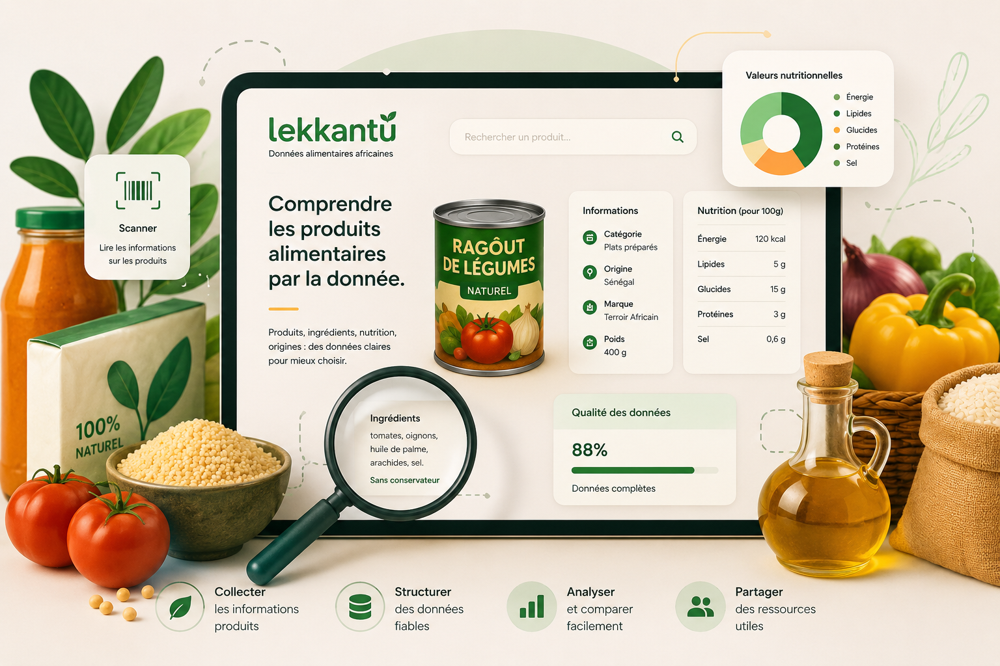

Référencer
Identifier les produits, marques, catégories, conditionnements et informations visibles.

Lekkantu structure les informations liées aux produits alimentaires : catégories, ingrédients, allergènes, valeurs nutritionnelles, marques, origines et observations terrain.
Comprendre notre alimentation à travers les données

Les informations alimentaires sont souvent dispersées, incomplètes ou difficiles à comparer. Pour de nombreux produits consommés localement, les données disponibles ne sont pas toujours organisées dans un format clair, exploitable et réutilisable.
Lekkantu répond à ce besoin en construisant progressivement une base de données structurée autour des produits alimentaires, avec une attention particulière portée aux ingrédients, aux valeurs nutritionnelles et aux informations utiles pour mieux comprendre ce qui est consommé.
Une approche simple pour transformer des informations produits en données exploitables.
Identifier les produits, marques, catégories, conditionnements et informations visibles.
Organiser ingrédients, allergènes et valeurs nutritionnelles dans une base claire.
Faciliter la lecture des données alimentaires et les comparaisons entre produits.
Produire des ressources utiles autour de l’alimentation, de la consommation et de la donnée.
Le projet se concentre sur les informations visibles, utiles et exploitables des produits alimentaires.
Catégorie, marque, nom du produit, conditionnement, origine et informations fabricant ou importateur.
Ingrédients, allergènes, additifs et éléments permettant une lecture plus claire de la composition.
Valeurs nutritionnelles, énergie, sucres, lipides, sel, protéines et autres informations disponibles.
Lekkantu avance par étapes : observation, saisie, structuration, contrôle et enrichissement progressif.
Collecter les informations disponibles à partir de supports produits.
Structurer les données dans un format cohérent et réutilisable.
Contrôler la qualité, les champs manquants et la lisibilité des données.
Lekkantu s’inscrit dans une vision plus large : rendre les données alimentaires plus accessibles, plus lisibles et plus utiles pour les consommateurs, les acteurs locaux, les analystes et les initiatives liées à la nutrition.
Le projet ne cherche pas seulement à accumuler des produits. Il vise à créer une base structurée, progressive et exploitable pour soutenir des analyses, des visualisations et des ressources autour de l’alimentation.
Accédez à la plateforme et suivez l’évolution du projet dans l’écosystème M221Tech.